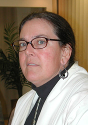

| CARLA PETIEVICH teaches history at Montclair State College, New Jersey, and is a Senior Research Scholar at the Southern Asian Institute, Columbia University, where she is currently working on South Asian Arts in the Diaspora. |
|  |
| PHOTO BY M.U. MEMON (Madison) October 2002 |